Relic Hunters Rebels
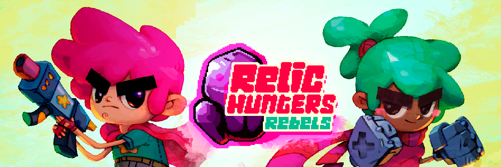
Relic Hunters Rebels is the first mobile title in the Relic Hunters franchise, published by Netflix Games for Android and iOS devices.

 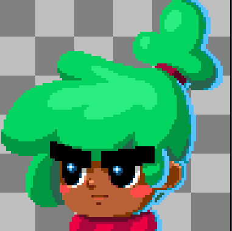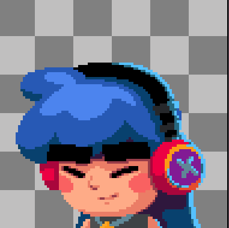
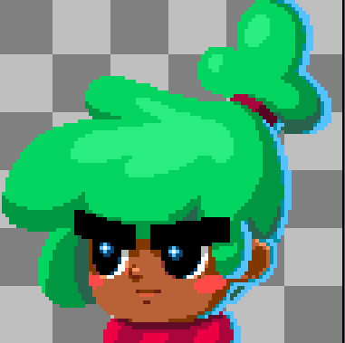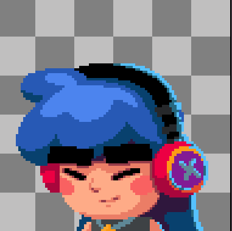
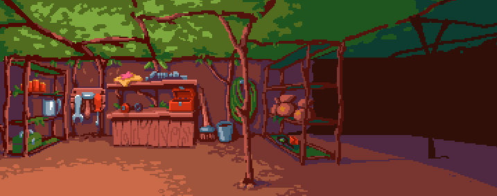
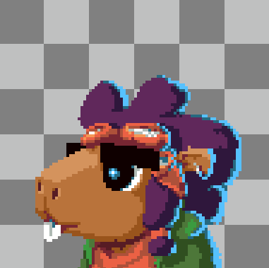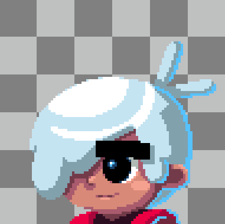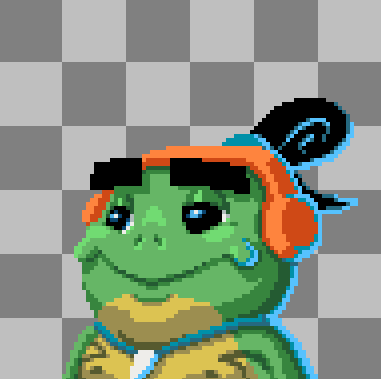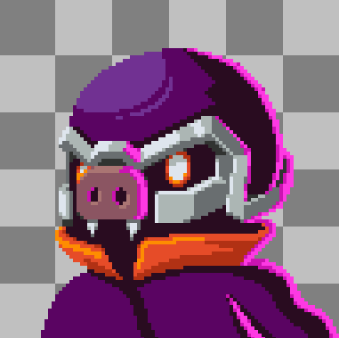
In this title i contributed in several areas, most notably Pixel Art, UI/UX, Game and Narrative Design. As Pixel Artist I made all of the dialog portraits in the game, as well as icons, cutscenes and backgrounds. Another notable contribution to the project was the UX and UI for a major game system (crafting and upgrades screen) as well as its integration with the game's story and lore.
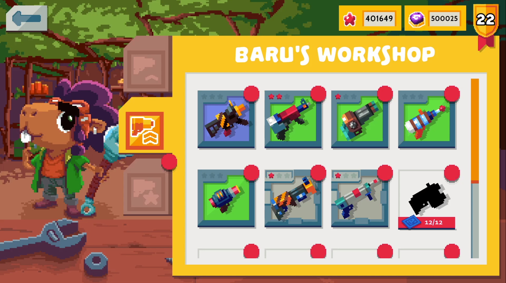
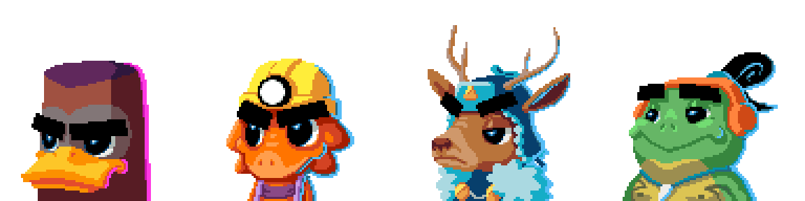
As Narrative Designer I took up the task of improving and rewriting the original drafted script, rewriting whole sections and characters to improve the narrative's overall pacing, tone and feel. Of these explorations, I also did concept and sprite work for one of the rewritten characters, Baru.
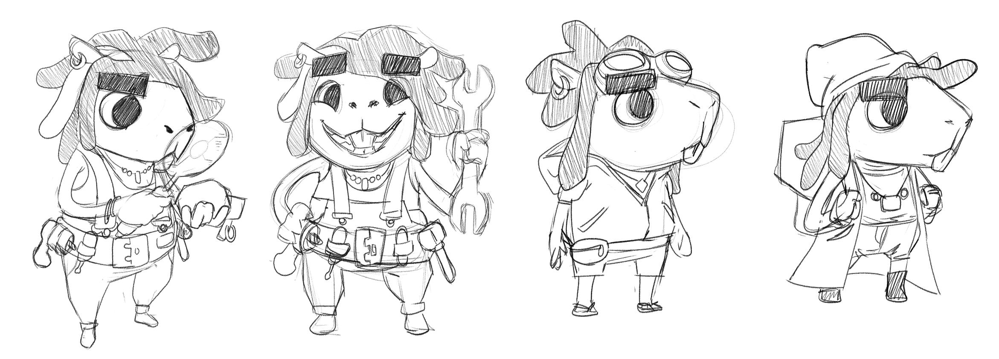

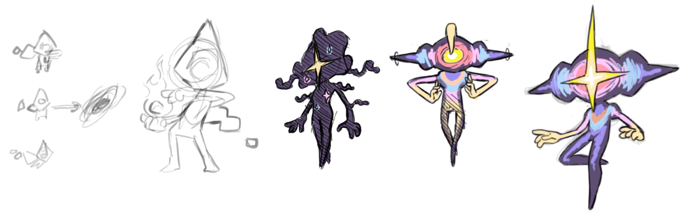
After the game's release, I designed one of the DLC characters in the game, They, having designed their moveset, character design and written lore for future use in the game's universe, as well as having made a full animation set for the other DLC character, Panzer.
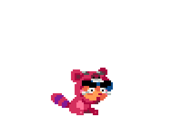
Relic Hunters Rebels is released and currently avaible on Google Play Store on Android and the App Store on iOS, and a Netflix subscription is required to play.